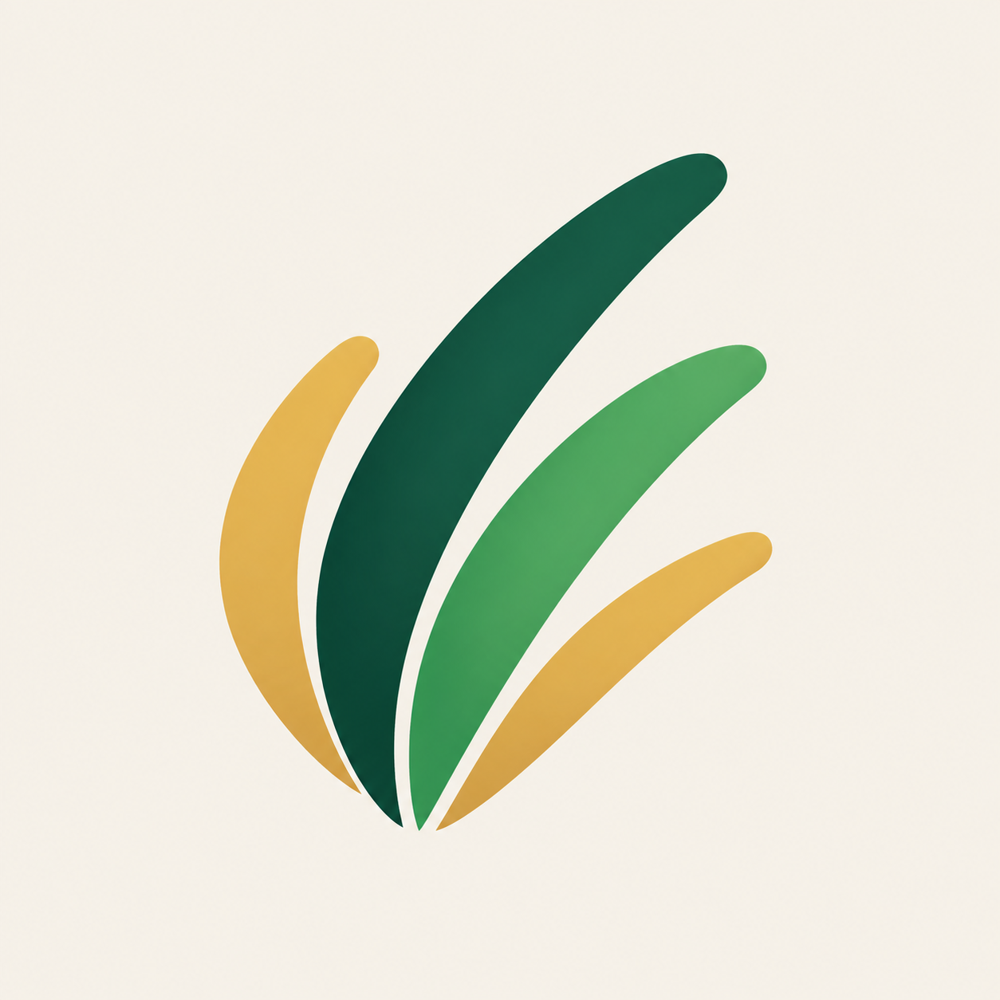

Purpose
Help ambitious teams turn useful ideas into software people trust and enjoy using.

cogon.studioInnovative enough to move ideas forward. Reliable enough to build on. Human enough to enjoy working with.
cogon.studio gives ambitious teams the momentum to turn useful ideas into dependable software.
Fresh product thinking, disciplined engineering, and a working relationship that stays clear from first decision to final delivery.
Help ambitious teams turn useful ideas into software people trust and enjoy using.
For startups and growing teams, cogon.studio blends fresh product thinking with disciplined engineering.
Momentum without chaos: clear decisions, dependable delivery, and software designed to keep growing.
Young and energetic without sounding untested. Technical without becoming cold. Warm without becoming vague.
Use semantic roles rather than choosing colors ad hoc. Green carries trust and interaction; yellow signals emphasis, optimism, and moments of delight.
#0B4A3B#071C16#5CCB91#E4B544#FFF7D6#FFFDF4| Core pair | Contrast |
|---|---|
| Ink on Soft Sun | 12.43:1 |
| Forest on Soft Sun | 9.49:1 |
| Soft Sun on Night | 16.61:1 |
| Sprout on Night | 8.77:1 |
| Gold on Night | 11.05:1 |
Light mode feels open and optimistic. Dark mode feels focused and premium. Both retain the same softness, energy, and legibility.
Clear decisions, dependable delivery, and a thoughtful product experience.
Start a projectModern product thinking with reliable systems underneath.
See our workThe open-source trio balances expressive confidence, reliable reading, and a credible developer voice.
The standalone symbol is the approved logo asset. Use its light or dark square version for avatars, app icons, navigation, and formal touchpoints.
Keep at least one quarter of the symbol height around every side.
Symbol: 24 px digital or 8 mm print.
Stretch, rotate, recolor outside the palette, add effects, or place on busy imagery.
The voice stays consistent while tone adapts to the moment. Friendly does not mean vague, and technical does not mean cold.
Lead with the outcome. Prefer plain words and short sentences.
Use evidence and specifics. Avoid inflated claims and empty tech hype.
Sound like a thoughtful teammate: direct, respectful, and encouraging.
Invite possibilities. Explain tradeoffs without making the audience feel behind.
“Here is what we know, what is uncertain, and the next useful step.”
“We leverage cutting-edge solutions to revolutionize your digital transformation.”
Every touchpoint combines organic warmth with disciplined software craft.
Semantic names let light and dark themes change without rewriting components.
:root {
--cogon-color-bg: #fff7d6;
--cogon-color-surface: #fffdf4;
--cogon-color-text: #12352c;
--cogon-color-primary: #0b4a3b;
--cogon-color-accent: #e4b544;
--cogon-font-display: "Bricolage Grotesque";
--cogon-font-body: "Inter";
--cogon-font-mono: "JetBrains Mono";
}
[data-theme="dark"] {
--cogon-color-bg: #071c16;
--cogon-color-surface: #0e2a22;
--cogon-color-text: #fff8dc;
--cogon-color-primary: #5ccb91;
--cogon-color-accent: #f0c85a;
}